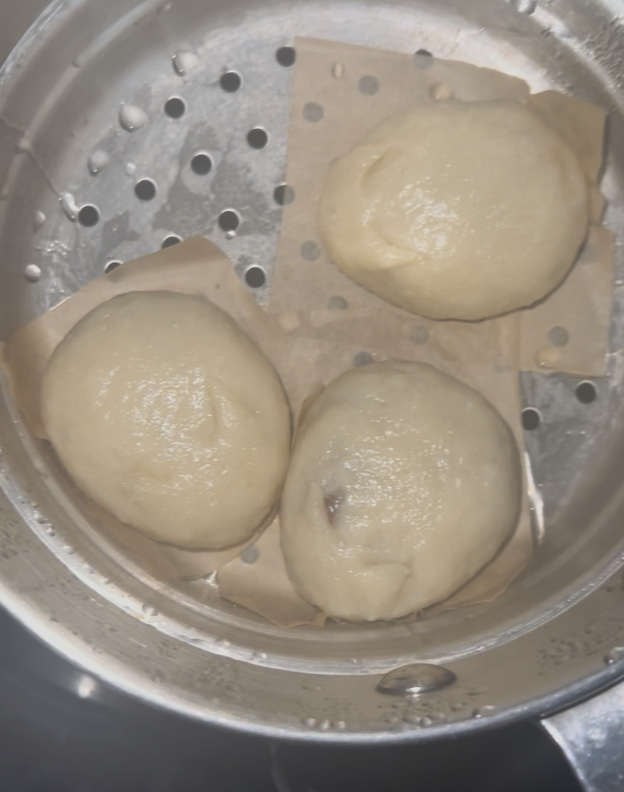
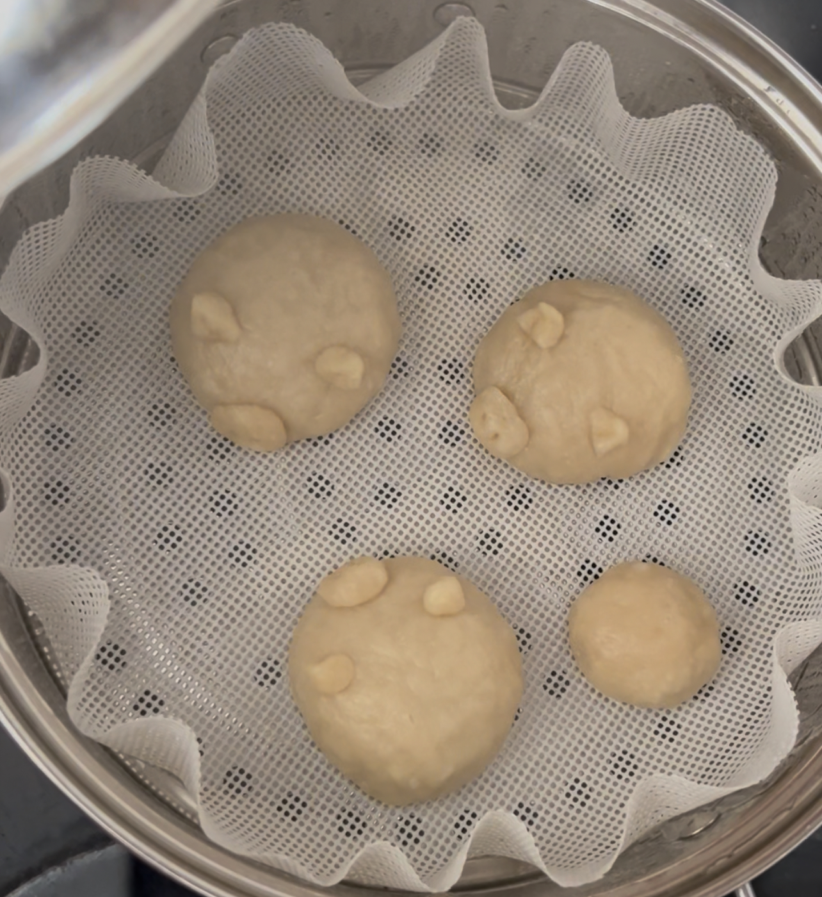

DIY Steamed Buns (difficulty 100)
I challenged myself in the kitchen (which I do every time I cook, anyways). Steamed buns should be so smooth on the outside and so airy on the inside. For an extra challenge, I made the steamed buns cute animals.
The first time was horrible. The buns were so dense… and wet…

The second time, I let the buns rise longer, but still the same result.

The third time, I finally learned I was killing the yeast by using hot water, so I stopped doing that. I also learned that milk can help activate the yeast better, so I started using milk instead of water.
Sure enough, the buns got puffier, but not by enough. I also introduced some COLOUR.

The fourth time, I let the dough rise overnight instead of just an hour. The dough became double the size, and I was so hopeful. However, WHO was going to tell me that I had to knead the air bubbles out before steaming??
So, in the end, my steamed buns had unproportionate, giant air bubbles instead of tiny ones and the BBL buns DEFLATED to half their size.

The fifth time, I had my friend joining me, and this was the most successful attempt.
We let the dough rise outside under the sun, so it quickly doubled in size. Then we got really funky with the designs.
She used nutella and tried to make some intricate swirly patterns she had found on Wechat. The swirl was achieved but the chocolate was smearing LOL.
I put chocolate on the inside of mine, made another pig of course, and a star pattern (looked ugly after cooking).
Designs aside, we had finally achieved the fluffy inside!!!!! Attempts 1-4 had unpleasurable textures to them, but this attempt was actually good!
The only improvement for the future is making the buns smoother, which I think just requires more kneading out the air bubbles.

75-hour work week
Boss is changing the work schedule, so I'm working seven days in a row between the old and new regimen.
That's six 11.5-hour shifts and one 5.5-hour shift. AHHHHHHHHHHHHHHHHHHH.
At least I get to make money.
I've also started biking to and from work. During the journey, I get to spend 20 minutes riding on a long, windy trail.
I'm not really outdoorsy, but the immersion in nature is much appreciated when working around food.
Lots of green. I've encountered bunnies, turtles, etc. And by the time I get off, it's 8:30 PM, so I get lots of fireflies lighting up the path.
Plus, the sunset is always so nice… I'm fantasizing about leaving rn